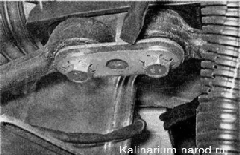
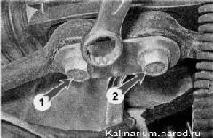
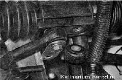
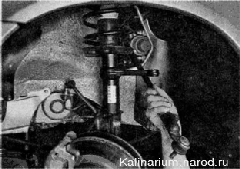
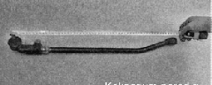

Рулевая тяга снятие и установкаВ разделе показано снятие левой рулевой тяги. Правую тягу снимаем аналогичным образом. Для выполнения работы необходима смотровая канава или эстакада. Снятие 1. Подготавливаем автомобиль к выполнению работы. 2. Снимаем переднее левое колесо. 3. Выпрессовываем палец наружного наконечника тяги из отверстия поворотного кулака. 4. Шлицевой отверткой снимаем стопорную пластину болтов крепления рулевых тяг к рулевому механизму.  5. Накидным ключом на 15 мм ослабляем затяжку болта 1 крепления правой тяги и отворачиваем болт 2 крепления левой тяги к рулевому механизму.  6. Вынимаем болт крепления левой тяги и поворачиваем пластины болтов вниз. 
7. Вынимаем левую тягу через отверстие брызговика. 
Установка 1. Измеряем длину снятой тяги (расстояние между центром отверстия резинометаллической втулки внутреннего конца тяги и центром заглушки отверстия шарового пальца). 2. Торцовым ключом на 17 мм ослабляем затяжку стяжного болта новой тяги. Вращая регулировочную втулку ключом на 27 мм, делаем длину новой тяги равной длине снятой тяги. Предупреждение! Перед регулировкой длины тяги убедитесь, что регулировочная втулка и наконечник завернуты на рулевую тягу до упора. 3. Устанавливаем тягу в обратной последовательности. 4. Затягиваем стяжной болт тяги моментом 19—30,9 Н-м (2,0—3,2 кгс-м). 5. Затягиваем и шплинтуем болт крепления пальца наконечников тяг моментом 27,1 — 33,4 Н-м (2,8— 3,4 кгс-м). 6. Болты крепления тяг к рулевому механизму затягиваем моментом 70—86 Н-м (7,1 — 8,6 кгс-м) после установки автомобиля на колеса. 7. Надеваем на болты стопорную пластину. После замены тяги необходима регулировка схождения колес на СТО. |